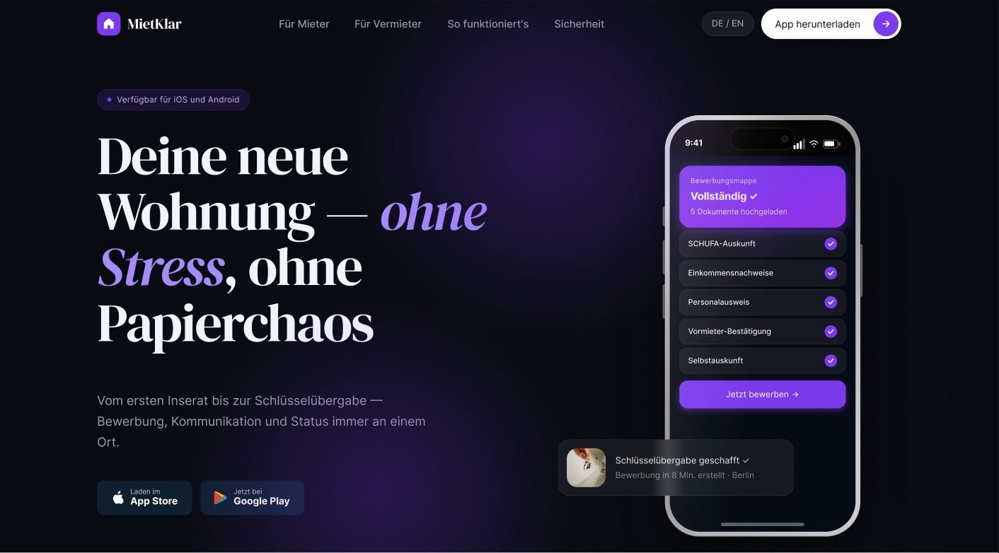
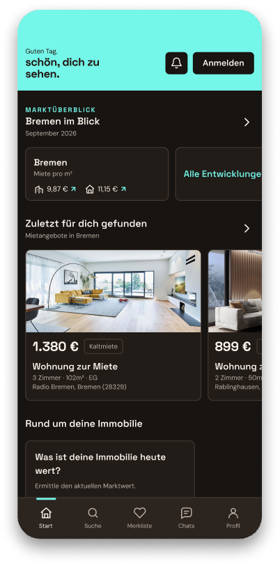
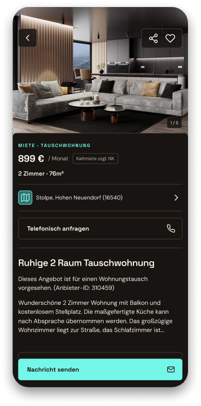

Ich gestalte digitale Produkte, die klar sind – und weiß, wie man sie baut.
Hallo, ich bin Volodymyr. Als UX/UI Designer mit Hintergrund in der Webentwicklung verbinde ich Nutzerbedürfnisse, sauberes Interface-Design und technisches Verständnis. Hier zeige ich drei Projekte rund um die Wohnungssuche in Deutschland.
Drei Projekte, ein Ökosystem
Landing Page, Mobile App und Web-Plattform – jedes Projekt in vier Wochen entstanden, vom Briefing bis zum klickbaren Prototyp.

MietKlar
Eine Marketing-Seite, die Mietern die Angst vor der Wohnungssuche nimmt und sie in die App führt – Desktop und Mobile.



Mietraum
Eine App für Wohnungssuchende: suchen, filtern, Anbieter kontaktieren und Besichtigungen buchen – in 22 Screens.

Raumfinder
Eine SaaS-Plattform für private Vermieter – vom ersten Inserat bis zum Mietvertrag, DSGVO-konform und übersichtlich.
Designer mit Entwickler-Kopf
Seit 2022 lebe ich in Deutschland. 2026 habe ich meine Ausbildung zum staatlich geprüften Informationstechnischen Assistenten an der BBS Syke abgeschlossen. Dort und in eigenen Projekten habe ich gelernt, Webanwendungen zu programmieren – vom Backend mit Java und Spring Boot bis zur Oberfläche mit HTML, CSS und JavaScript.
Beim Programmieren habe ich gemerkt: Mich interessiert vor allem, wie Menschen ein Produkt erleben. Deshalb bilde ich mich an der Deutschen Tech Akademie im Bereich UX/UI Design weiter – mit User Research, Wireframing, Prototyping in Figma und Design-Systemen.
Im Praktikum bei 66ROCKET IT Solutions habe ich im Team an echten Kundenwebsites gearbeitet. Genau diese Verbindung aus Design, Technik und Zusammenarbeit möchte ich weiterführen.
Design
Entwicklung
Sprachen
-
08/2026 – 12/2026
UX/UI Design (Weiterbildung)
Deutsche Tech Akademie · User Research, Prototyping in Figma, Usability-Tests, Design-Systeme, KI-gestützte Projektarbeit mit Claude
-
11/2025 – 12/2025
Praktikum Webentwicklung
66ROCKET IT Solutions, Bremen · Kundenwebsites im Team mit HTML, CSS und JavaScript, Abstimmungen mit Kunden
-
08/2024 – 07/2026
Informationstechnischer Assistent
BBS Syke · Staatlich geprüft · Anwendungsentwicklung (C++, Python, PHP, SQL), Systemadministration
-
Eigene Projekte
Code auf GitHub
Fantasy-RPG (Spring Boot), Energy Billing System, AI Energy Billing Assistant, Website für ein Fitnessstudio
Lass uns gemeinsam etwas Gutes gestalten.
Ich suche eine Einstiegsstelle als Junior UX/UI Designer oder im Frontend. Ich freue mich über deine Nachricht.